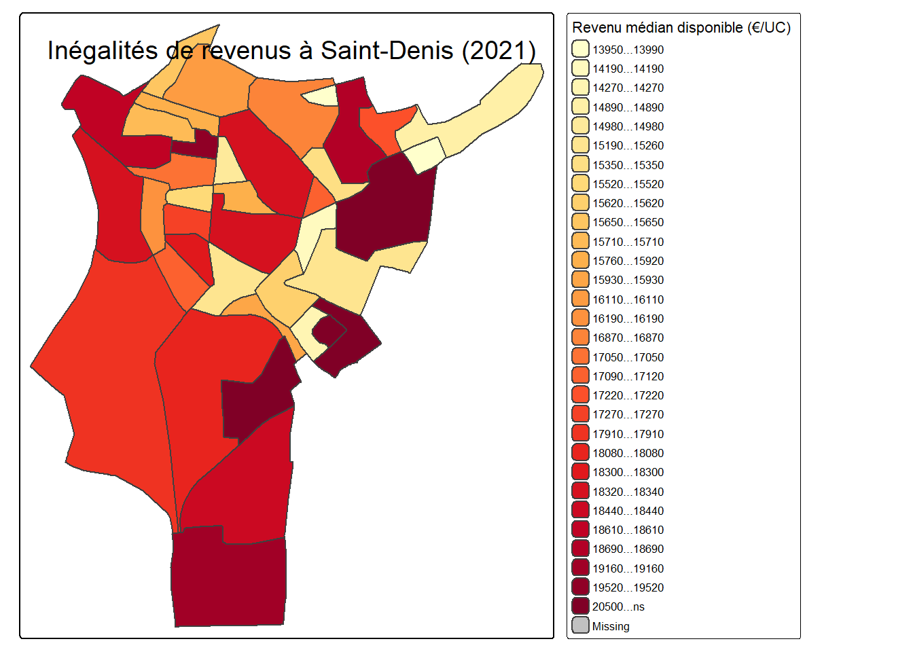
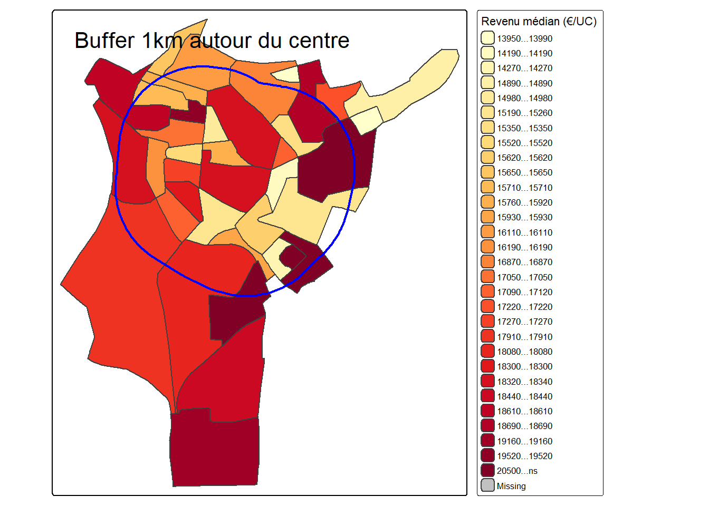
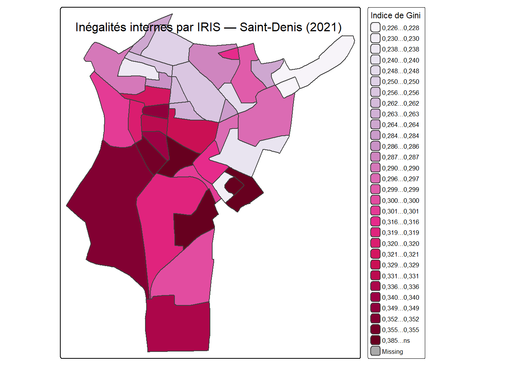
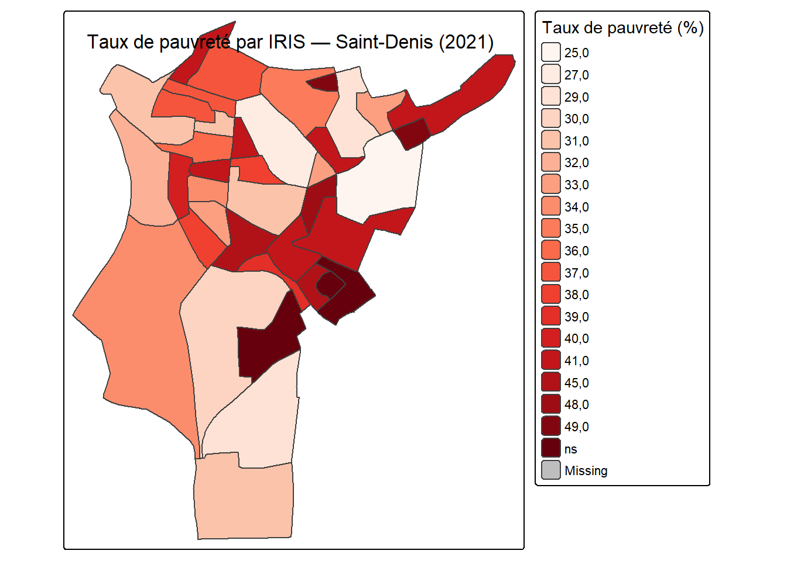

Vecteurs
Lylia
2026-05-09
library(sf)Lecture des données
iris <- st_read("data/iris.shp")## Reading layer `iris' from data source
## `C:\Users\fchri\OneDrive\Bureau\One Drive de Lylia Christory\OneDrive\Documents\projet-geomatique\data\iris.shp'
## using driver `ESRI Shapefile'
## Simple feature collection with 614 features and 30 fields
## Geometry type: MULTIPOLYGON
## Dimension: XY
## Bounding box: xmin: 2.28833 ymin: 48.80725 xmax: 2.603314 ymax: 49.01233
## Geodetic CRS: WGS 84Filtre Saint-Denis
iris_sd <- iris[
iris$Nom_Officie.7 == "['Saint-Denis']",
]Reprojection en Lambert 93
iris_sd <- st_transform(iris_sd, 2154)Fusion des IRIS
commune_sd <- st_union(iris_sd)Création du buffer
buffer_sd <- st_buffer(
commune_sd,
dist = 500
)Carte
plot(st_geometry(commune_sd))
plot(
st_geometry(buffer_sd),
add = TRUE,
border = "red",
lwd = 2
)

Cette carte représente la répartition spatiale du revenu médian disponible à l’échelle des IRIS, c’est-à-dire des petites unités statistiques qui permettent une lecture fine du territoire. Le choix d’un dégradé de couleurs allant du jaune pâle au rouge foncé permet de visualiser immédiatement les contrastes socio-économiques : les teintes claires correspondent aux revenus les plus faibles, tandis que les teintes sombres signalent les niveaux de vie les plus élevés.D’un point de vue général, la carte met en évidence une forte hétérogénéité interne. L’espace communal n’est pas uniforme. Au contraire, il est fragmenté en zones distinctes où les conditions de vie varient sensiblement. On observe une juxtaposition de quartiers aux profils socio-économiques très différents, ce qui traduit une organisation urbaine marquée par des logiques de ségrégation. Les zones les plus riches, identifiables par des teintes rouges foncées, se concentrent principalement dans certaines parties périphériques et dans quelques enclaves plus centrales. Ces espaces correspondent souvent à des quartiers bénéficiant d’un meilleur cadre de vie : habitat plus qualitatif, présence d’infrastructures, accessibilité accrue aux transports et à l’emploi. Ces zones peuvent également être associées à des formes d’habitat plus stabilisées, avec une proportion plus importante de propriétaires et des ménages aux revenus plus élevés. Le sud et certaines zones apparaissent notamment comme des secteurs où les revenus médians sont plus élevés, traduisant une relative attractivité résidentielle.
À l’inverse, les zones les plus pauvres, figurées en jaune clair ou beige, se situent majoritairement dans des secteurs centraux et dans certaines parties du nord et de l’est. Ces quartiers présentent des revenus médians nettement inférieurs de de 13 950€ à environ 14 890€. Entre ces deux extrêmes, une large palette de teintes intermédiaires révèle des zones de transition, où les niveaux de vie sont moyens. Ces espaces jouent un rôle de tampon entre les quartiers les plus favorisés et les plus défavorisés, illustrant la complexité du tissu urbain.

Un buffer de 1 km tracé autour d’un point central permet de focaliser l’analyse sur une zone précise et d’observer la distribution des revenus dans cet espace délimité.Le choix d’un buffer de 1 km autour du centre permet d’analyser l’effet de la distance sur la distribution des revenus. Cette distance correspond à une échelle pertinente de proximité urbaine (environ 10 à 15 minutes à pied), ce qui permet d’observer les variations socio-spatiales entre le centre et les espaces périphériques. Le point central choisi correspond au cœur historique et administratif de la commune, structurant l’organisation du territoire.Sur cette carte le buffer met en évidence un espace central caractérisé par une grande diversité socio-économique. À l’intérieur de ce périmètre, les couleurs varient allant du jaune clair au rouge foncé. Cela signifie que le centre de la commune n’est pas homogène, mais qu’il rassemble des populations aux niveaux de vie très contrastés avec des revenus médian allant de 13 950€ à 20 500€.
Les zones les plus riches à l’intérieur du buffer apparaissent sous forme de tâches rouges foncées dispersées. Elles ne forment pas un bloc continu, mais plutôt des îlots ponctuels. Cela peut correspondre à des opérations de renouvellement urbain, à des secteurs récemment valorisés ou à des zones bénéficiant d’une meilleure accessibilité (proximité des transports, des commerces ou des équipements culturels). Ces espaces se distinguent par un niveau de revenu plus élevé d’environ 18 000€ à 20 500€, cela indique une présence de ménages relativement aisés. En parallèle, les zones les plus pauvres à l’intérieur du cercle sont nombreuses et souvent contiguës. Les teintes claires dominent dans plusieurs parties du centre, révélant une concentration de ménages à faibles revenus.Les revenus médians les plus faibles sont compris entre 13 950€ à 15 620€. Ces quartiers peuvent être marqués par une forte densité de logements collectifs, une présence importante de populations modestes et des difficultés socio-économiques persistantes. Le fait que ces zones soient situées au cœur même de la ville montre que la centralité n’est pas nécessairement synonyme de richesse.
Ce qui ressort particulièrement de cette carte, c’est la coexistence immédiate de situations sociales opposées dans un espace restreint. Le buffer révèle une proximité spatiale entre richesse et pauvreté, ce qui peut engendrer des contrastes visibles dans le paysage urbain, mais aussi des enjeux en termes de cohésion sociale. Enfin, la limite circulaire elle-même permet de souligner que les dynamiques socio-économiques ne sont pas uniquement périphériques, mais qu’elles s’inscrivent pleinement dans le cœur de la ville. Le centre apparaît ainsi comme un espace fragmenté et complexe, où se superposent différentes réalités sociales. En somme, cette carte offre une lecture fine de la distribution des revenus dans un espace ciblé, mettant en évidence la diversité et les inégalités qui structurent le centre urbain.

La carte des inégalités internes par IRIS, mesurée à l’aide de l’indice de Gini, apporte un éclairage complémentaire sur la structuration sociale de l’espace urbain. L’analyse est réalisée à l’échelle des IRIS (Îlots Regroupés pour l’Information Statistique), qui sont des unités spatiales définies par l’INSEE. Chaque IRIS regroupe en moyenne environ 2 000 habitants et constitue une échelle pertinente pour observer les inégalités à l’intérieur d’une commune. Elle met en évidence les écarts de revenus au sein même des quartiers, grâce à un dégradé de couleurs allant des teintes claires (faibles inégalités, autour de 0,226) aux teintes foncées (fortes inégalités, jusqu’à 0,385).L’indice de Gini est un indicateur statistique qui mesure le niveau d’inégalité des revenus au sein d’une population. Il varie entre 0 et 1 : une valeur proche de 0 signifie que les revenus sont très homogènes (peu d’écarts entre les habitants), tandis qu’une valeur proche de 1 indique de fortes inégalités. Dans le cadre de cette carte, cet indicateur est particulièrement utile car il permet de comprendre non seulement où se situent les quartiers pauvres ou riches, mais aussi dans quels espaces les écarts de revenus sont les plus importants.
L’analyse montre que les niveaux d’inégalités les plus élevés se situent principalement dans les zones au sud et au sud-ouest, mais également dans certains secteurs centraux. Ces espaces se caractérisent par une forte hétérogénéité sociale, où coexistent des populations aux niveaux de vie très différents. À l’inverse, les zones situées au nord et au nord-est présentent des niveaux d’inégalités plus faibles, traduisant une plus grande homogénéité sociale. Ces quartiers peuvent être soit relativement favorisés, soit majoritairement populaires, mais avec des revenus globalement proches entre habitants.
Cette carte montre ainsi que la fragmentation socio-spatiale ne se limite pas à une simple opposition entre quartiers riches et pauvres. Elle révèle également des contrastes internes importants, notamment dans les espaces centraux où se combinent mixité sociale et fortes inégalités. L’indice de Gini permet donc de mettre en évidence une fragmentation plus fine, à l’intérieur même des quartiers, et pas seulement entre eux.

La carte représentant le taux de pauvreté par IRIS en 2021 à Saint-Denis met en évidence une forte disparité spatiale des situations sociales au sein de la commune. Comme pour la carte précédente, l’utilisation des IRIS permet d’analyser les écarts de revenus à une échelle fine, au plus près des réalités locales.Réalisée sous forme de carte choroplèthe, elle utilise un dégradé de couleurs allant des teintes les plus claires, correspondant à des taux de pauvreté faibles (autour de 25 %), aux teintes les plus foncées, indiquent des niveaux très élevés pouvant atteindre 49 %. L’observation de la carte montre que les taux de pauvreté les plus élevés se concentrent principalement dans les quartiers situés au sud de la commune, ainsi que dans certaines zones centrales et à l’ouest. Ces espaces apparaissent nettement plus touchés par la précarité. À l’inverse, les taux les plus faibles se localisent davantage au nord et au nord-est, où les conditions de vie semblent relativement plus favorables. Cette répartition traduit une géographie marquée de la pauvreté, avec une concentration des populations les plus modestes dans certains secteurs. Ces écarts importants révèlent des dynamiques de ségrégation, où les populations en difficulté tendent à se regrouper dans des quartiers spécifiques, tandis que d’autres zones apparaissent plus favorisées. Cette organisation spatiale met clairement en évidence une fragmentation socio-spatiale à l’échelle de la commune.
Schéma
Le géotraitement vectoriel constitue le cœur de notre analyse, car les données utilisées sont organisées à l’échelle des IRIS. Il repose sur plusieurs étapes permettant de transformer des données brutes en informations spatialisées interprétables.

Dans un premier temps, les contours des IRIS fournis par l’IGN sont importés dans RStudio. Ces données vectorielles, sous forme de polygones, définissent les unités spatiales d’analyse. Ensuite, les données statistiques issues de la base Filosofi de l’INSEE sont préparées et nettoyées afin de garantir la correspondance des identifiants avec les IRIS.
L’étape clé est la jointure attributaire, qui consiste à associer à chaque polygone IRIS les variables socio-économiques (revenu médian, taux de pauvreté et indice de Gini). Cette opération permet de transformer des données statistiques en données spatiales exploitables. Une fois les données enrichies, un travail de discrétisation est réalisé afin de classer les valeurs en différentes catégories par exemple du plus faible au plus élevé. Cette étape est essentielle pour la représentation cartographique, notamment dans les cartes choroplèthes. Enfin, certaines opérations de fusion (dissolve) peuvent être mobilisées pour regrouper des IRIS présentant des caractéristiques similaires, ce qui permet de faire apparaître des zones homogènes.
L’ensemble de ces traitements permet d’identifier des logiques spatiales et de mettre en évidence la fragmentation socio-spatiale à l’échelle communale.